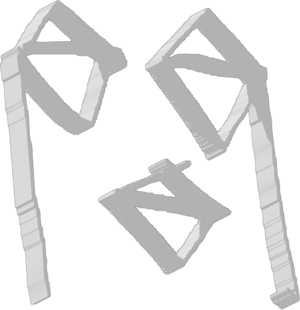

2.1 Edge Riders / 密を往く者たち
あふれかえる情報と、効率化された世界を生きる現在。
逃げ出すわけでも 盲従するわけでもなく、
その濁流へ、あえて飛び込む。
失いかけた、生きている実感をもう一度たぐり寄せる。
合理化の先で、何を叫ぶのか。

現在、株式会社まなか が監修するウェブサイト " 間｜MA" の公開に向け準備を進めています。この note は、よくある企業の完成報告や PR ではありません。合理化の極致にある現代社会に対して、" 間｜MA" という新しい文化を届けるため、その実験プロ・・・note を読む ↗